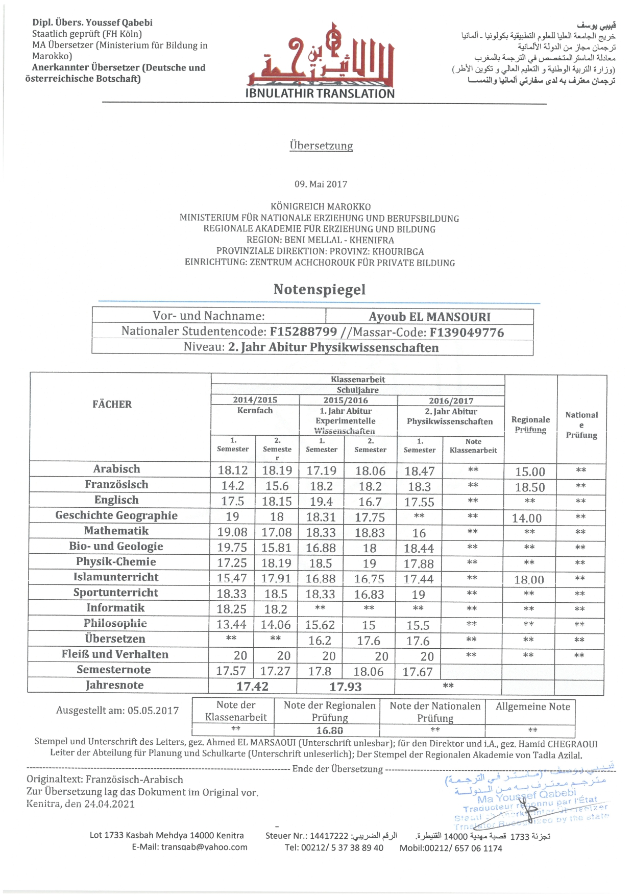
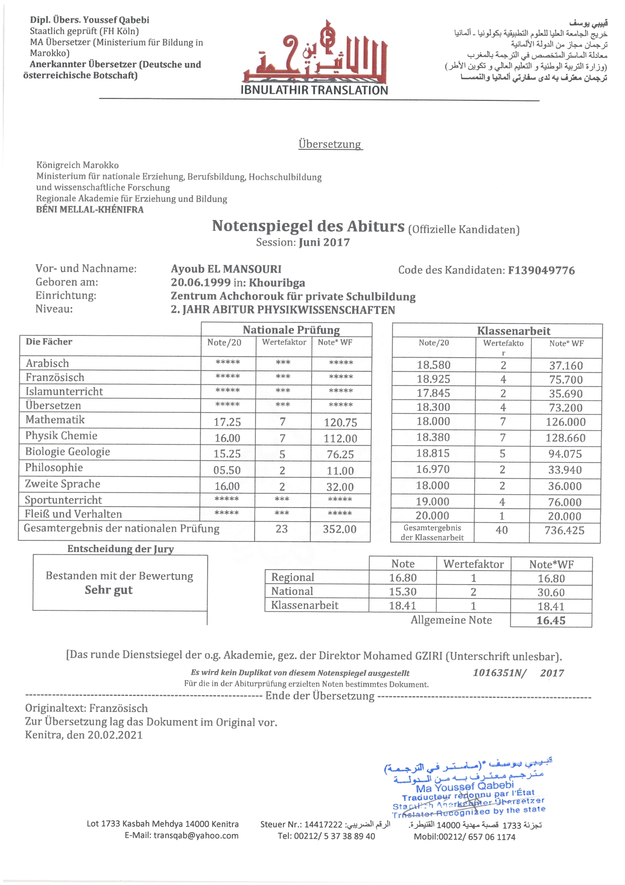
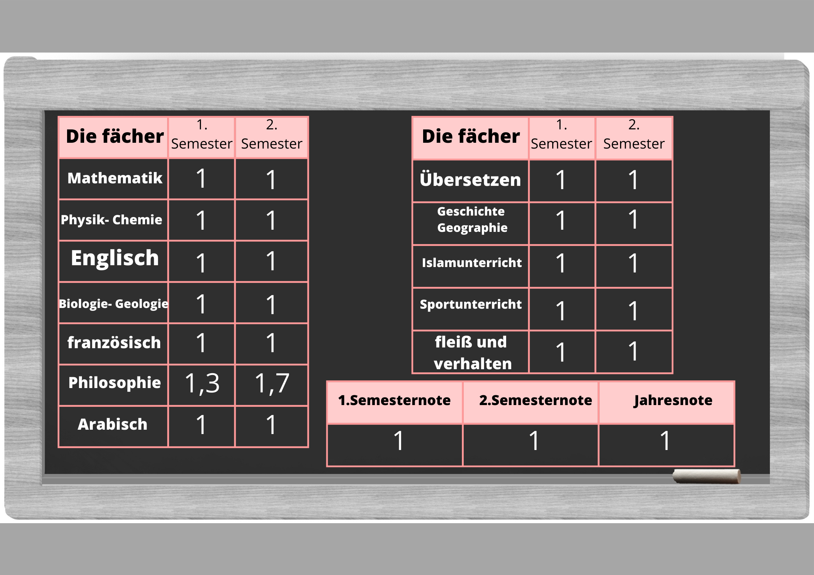
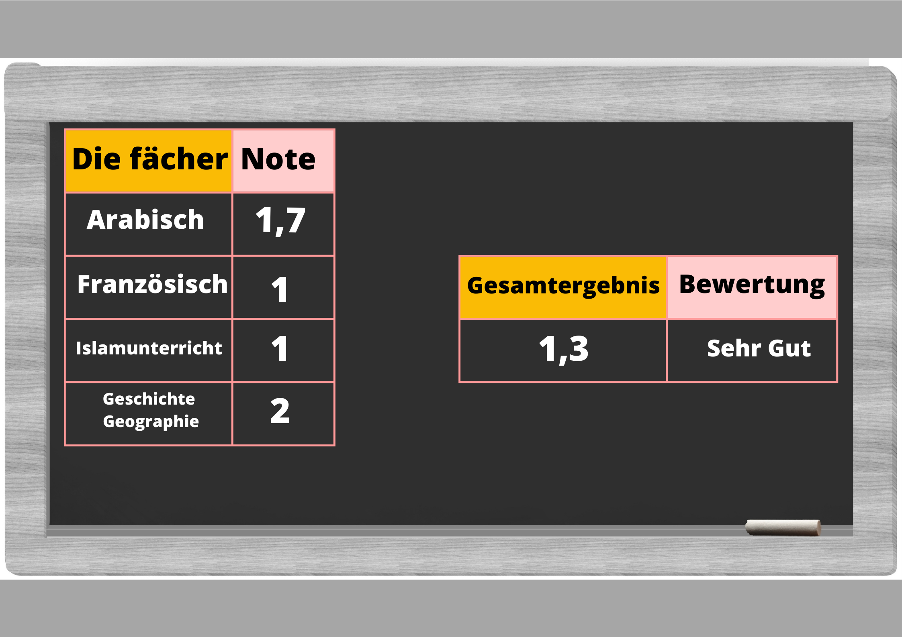
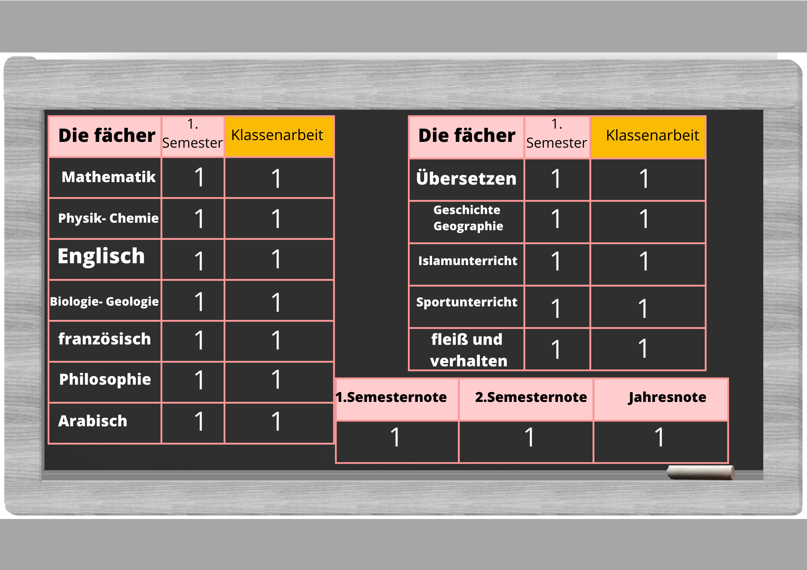
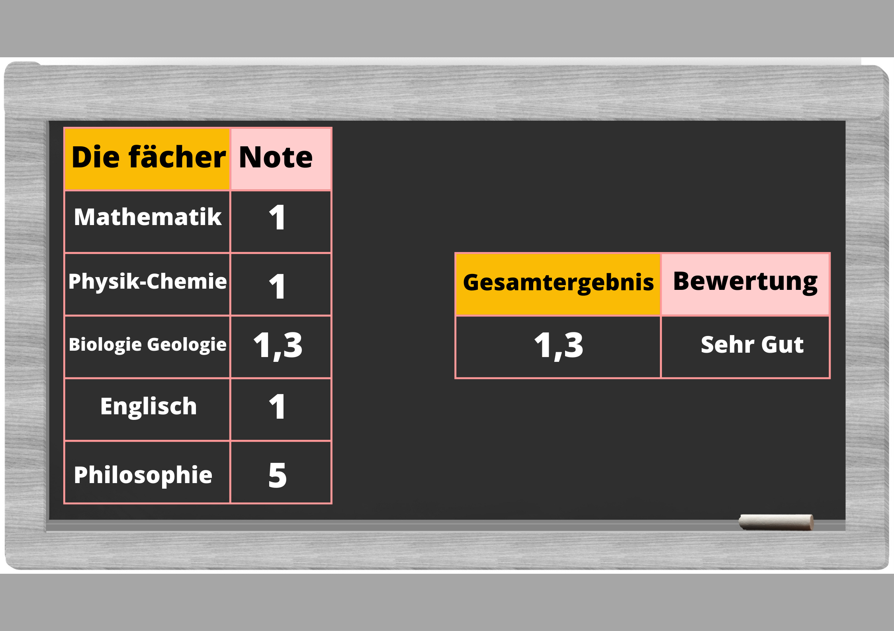

Abitur (Schulbildung)
Seit 2007 sind die Abschlussprüfungen zum Erwerb des "Baccalauréat" zweigeteilt. Am Ende der Klassenstufe 11 findet eine zentrale regionale Prüfung ("Examen régional") in den Nebenfächern der Fachrichtung statt.

Am Ende der Klassenstufe 12 werden die Hauptfächer der Fachrichtung in Form einer zentralen nationalen Prüfung ("Examen national") geprüft. Die Gesamtnote des "Baccalauréat" setzt sich entsprechend zu 25% aus der regionalen Prüfung und zu 50% aus der nationalen Prüfung zusammen. Die restlichen 25% kommen aus der laufenden Bewertung ("contrôle continu")-klassenarbeit (darunter)- während des zwölften Schuljahres.

Bemerkungen: Die Bacheliers erhalten auf Antrag Notenübersichten über die Baccalauréat-Prüfung ("Relevé des notes obtenues à l'examen du Baccalauréat"), die von der zuständigen Akademie des marokkanischen Erziehungsministeriums ausgestellt sind. Weitere Informationen finden Sie hier
Kernfach (10. Klasse)
Kernfach: Die Bezeichnung, die dem ersten Jahr der High School verliehen wird, da es sich um ein Einführungsjahr in den Zweig handelt, der nach erfolgreichem Abschluss des 3. Studienjahres in Marokko gewählt wurde. .
1.Jahr Abitur (11. Klasse)

Die Regionalprüfung richtet sich an alle Schülerinnen und Schüler im 1. Jahr des Abitur, unabhängig von ihrer Branche. Die Fächer unterscheiden sich von einer Branche zur anderen, mit Ausnahme des französischen und des islamischen Unterrichts, die allen diesen Bac-Brachne gemeinsam sind.

Am Ende der Klassenstufe 11 findet eine zentrale regionale Prüfung ("Examen régional") in den Nebenfächern der Fachrichtung statt.
2.Jahr Abitur (12. Klasse)

Physikwissenschaften ist eine der Studienrichtungen, die ein Student nach dem 1. Jahr des Abiturs in experimentellen Naturwissenschaften wählen kann. Dies ist ein Bachelor-Abschluss mit sehr guten Noten in Physik, der es den Studierenden ermöglicht, maximale Fähigkeiten in diesem Bereich zu erwerben.Das Programm des naturwissenschaftlichen Zweiges im 2. Jahr des Abiturs umfasst folgende Hauptfächer: Physik, Chemie, Mathematik, Lebens- und Geowissenschaften.

Abiturnote : 25% aus der regionalen Prüfung + 50% aus der nationalen Prüfung + 25% aus der Klassenarbeit